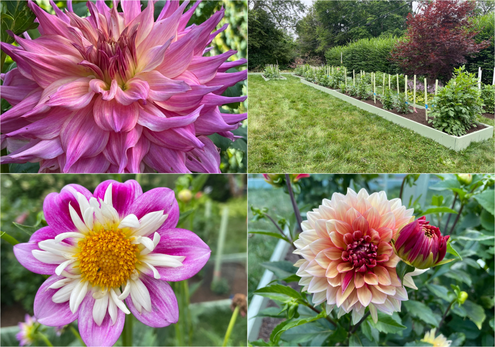

|
Hello dahlia friends!
As we begin our new membership year we are
looking forward to getting to know all the new
members who recently joined YDS and reconnecting
with all our renewing members. Thank you to all
who are part of YDS. We’ve been a little quiet
on social media the past couple of weeks as we
have been busy with club administration and
planning upcoming programs and events for next
year. It’s exciting to see each program take
shape and really satisfying to check off each
task on the To Do list!
Earlier this month we had a great Zoom meeting
with ADS Senior Judges Jim Teeple and Kathy
Burke from Mid Island Dahlia Society. Jim and
Kathy gave us a glimpse of what it’s like to
enter your blooms in a dahlia show, and shared
some tips with us, such as morning is the best
time to cut your blooms. Did you know there are
two kinds of judging methods used at a dahlia
show?
Jim and Kathy
What You Can Learn
As part of our ongoing commitment to minimizing
virus in our gardens, YDS participated once
again in the ADS Clean Stock Initiative virus
testing program. Earlier this month we took
samples from 60 different plants and sent them
off to Dr. Hanu Pappu’s lab at Washington State
University. At an average cost of $7.50 per
sample plus the cost of overnight shipping the
club spent a little over $575 on this program.
YDS also purchased Agdia test strips for spot
testing on site. We believe it is truly
worthwhile to be able to offer tested stock to
our members to purchase and to propagate for
future tuber sales. Your purchases and donations
help to support these efforts. Thank you!
Be sure to save the dates for our Public Dahlia
Exhibit at the Westwood Library October 1-2. We
would love to see hundreds of your blooms grace
the tables! Please consider bringing as many of
your blooms as you can so we will have an
amazing and beautiful display for all to enjoy.
YDS has committed to make this a floral foam
free exhibit. Using floral frogs to support
blooms instead of floral foam will allow us to
do this.
We anticipate a need to (would like to)
purchase approximately (at least) 300 pin
frogs for our upcoming dahlia exhibit. To help
us meet our goal we have set up a GoFundMe
account. Please visit our GoFundMe page and
consider supporting YDS as we get our exhibit
supplies goal up and running. See details
below or email us for more info.
First bloom of the year was spotted in the YDS
dahlia garden at Woburn Senior Center in Woburn
MA. Colorado Classic made the early appearance,
and the guests of the Senior Center couldn’t
have been more delighted. So are we!
Photos by Catherine Shaughnessy
Our next meeting will be a garden tour of the
suburban garden of YDS members Susan and Brad
Keyes. You can read about Susan and her garden
in our Member Spotlight section. Once again, we
will have a special morning photography session
for those who enjoy taking photographs. It’s
sure to be an enjoyable day!
– Misty & Carol
|
|
September 18th Meeting
YDS Member Garden Tour with YDS Members Susan
and Brad Keyes
Photos by Susan & Brad Keyes
Join us for a tour of the garden of YDS members
Susan and Brad Keyes in Wayland Massachusetts. A
town steeped in history, Wayland was founded in
1638 and established the first free public
library in the state in 1848. Susan and Brad
have a lovely suburban garden, growing dahlias
in several raised beds and in perennial gardens
on their half acre property. They have enjoyed
expanding their garden over time, adding more
dahlia beds every year to have the lovely dahlia
collection they have today.
In the morning we will have time to photograph
the garden and dahlias for both new and
experienced photographers as well as time to
chat cameras and photos over coffee and fruit
filled brambles. Prior to the tour we will kick
off our Dahlia Study program as we look to
enrich our dahlia knowledge. We will have time
to mingle with dahlia friends and in the
afternoon, Susan and Brad will lead a tour of
their garden and talk about their dahlias and
their gardening journey.
Location:
Garden of YDS Members Susan & Brad Keyes, 91
East Plain Street, Wayland MA 01778
Date & Time:
Thursday, September 18th, 8:30am-12:30pm (EST)
Parking Details
Parking across the street on Pollock Road.
Attached map.
Remember
To bring your folding chair, your camera and a
picnic lunch.
RSVP
Not required, but it would be wonderful to know
if you are able to join us as we would like to
make sure to have enough coffee and fruit filled
brambles.
RSVP on Sign Up Genius
https://www.signupgenius.com/go/10C0C44AFA82DA5FAC16-garden1
Rain Plan
We ordered beautiful fall New England weather,
however if needed we will plan for a Zoom
meeting from 9:30am-11:00am. Notification & Zoom
Link will be sent out in advance.
Guests
As dahlia bloom season has arrived, it’s the
perfect time to tell your friends about YDS. We
welcome guests and simply ask if they can RSVP
so we know they are coming.
Find Susan and Brad on Instagram
@susekeyes
;
@bradkeyes
Questions
Please email
info@yankeedahliasociety.com
or call Misty or Carol:
- Misty’s Cell: (732) 674-2087
- Carol’s Cell: (508) 826-921
|
|
Member Spotlight
Susan Keyes
 susekeyes
susekeyes

Photos by: Susan Keyes
Peonies and dahlias…rainbows of color and
form…both providing weeks of anticipation as
they slowly emerge then leap towards the sky! Of
all the flowers I’ve grown, these two are
probably my favorites, dating back to my
childhood when my dad, a great lover of beauty,
encouraged my 8-year-old self to choose what
flowers I wanted to grow in “my” garden. Of
course, I’ve flirted with others in my years as
a perennial gardener but these two sturdy and
reliable old friends satisfy my love of strong
colors.
Of course they both have their unique
challenges. No matter what, it rains when the
peonies bloom, and I mourn them when they are
lying on the ground. We have the prettiest
parasols (from Cricket Hill Peonies) that help
with that problem but I still wish they had a
longer blooming season!
And a fragrant dahlia would be the perfect
flower for me, especially if the fragrance
deterred the Japanese beetles!!
I am a perennial gardener growing shrubs and
perennials with a mix of annuals in my partly
shaded back yard. Six years ago my husband Brad
and I had the good fortune to be able to remodel
our house where we’ve lived for 45 years,
coupled to the tragedy of having the
construction uproot about 2/3 of the yard
including my oldest gardens. Planning the
re-planting turned out to be a good experience
though, because it encouraged me to try lots of
new things including ornamental grasses, hostas
and a greatly expanded peony border.
That work also brought me face-to-face with the
fact that we really cannot grow plants that love
full sun behind our house except in containers
on our deck. That and the ecologically aware
push to shrink our lawn, gave us the idea of
adding some raised garden beds to our front
yard, at least in the sunny patches. Thus, my
first dedicated dahlia beds. And they have been
such a treat!
In the first year I planted eight tubers. The
following year we built three raised beds and
expanded to about 70 tubers. This year we added
two more beds and I initially planted about 140
different varieties, many wintered over from
prior years plus lots of new ones.
As we all know, it’s been a tough year for
dahlias. Mine have not liked the long stretches
of 90+ degree heat with no real relief. And my
town has had an almost total watering ban since
late June so I’ve had to skimp a lot on
watering. Unfortunately one of the dahlia
growers I purchased from this spring notified me
that they had (unintentionally) shipped plants
with a virus. I dug up and threw away the
potentially affected plants. But I’ve still
spent the entire summer inspecting every
yellowing or shriveled leaf on the remaining
plants, not knowing whether I am looking at heat
damage, lack of water, spreading viruses, or
bugs. Of the 140 that I originally planted I’ve
lost about 16 due to rotted tubers combined with
the suspected virus infected plants.
But still…as they’ve started to bloom in the
past few weeks I am delighted at all the new
colors and forms I tried this year, and the
upper half of most of the plants looks a lot
happier than the lower half! I stripped the
lower leaves, because I saw a recommendation
that said this might protect against powdery
mildew.
So, I don’t claim to be an expert but I am
definitely a lover of dahlias! Some of my new
early favorites this year are Bloomquist Simple,
GG’s Orange Slice, Sandia Brocade and Bloomquist
Curt.
I’m looking forward to sharing lots of different
dahlias and gardening ideas with all the new
friends from the Yankee Dahlia Society!
|
|
Generous Gardeners: Beautiful Dahlias Blooming
in Gloucester
Photo by Rich D’Orsi
Rich and Maria D’Orsi took a visit to Stacy
Boulevard in Gloucester to see the garden beds
along the water created and maintained by
Generous Gardeners. All the white planting of
dahlias with sweet alyssum look beautiful!
|
|
Connecticut Dahlia Society Dahlia Show Elizabeth
Park (Hartford, CT)
Photos by: Misty Florez
Dahlia Shows:
Four of us packed in Carol’s car with a trunk
full of flowers to participate in our first show
of the season. We were excited for Rich and Roy
to enter blooms in their first dahlia show. The
day trip to Hartford, CT was a success, bringing
home ribbons, a little cash prize and some big
smiles.
If you have never been to a dahlia show or would
simply like to join us in a carpool please reach
out via email or text.
https://www.yankeedahliasociety.com/shows
|
|
Dahlia Tip
Capturing Your Dahlias In Full Bloom
By: Leticia Fleischer
leticia.fashionista
To truly enjoy the beauty of my dahlias
year-round, I’ve developed a secondary
passion...that of photography to capture my
dahlias in full bloom. While some may feel an
expensive digital camera is needed, I use
nothing more complex than my own iPhone. As it
took a lot of trial and error to start getting
consistently solid results, here are my tips for
digitally preserving your dahlias forever:
Get Dirty
Take a knee or if needed, lay down to get the
right angle. While you may get some dirt on your
clothes, you’d be surprised how “the right
angle” can produce a truly exceptional view
Get Close
The closer you get to your subject, the more
background/noise you can filter out and the more
the specific flower can be the “star”.
Get Creative
iPhones come with some pretty tremendous photo
editing options. You can zoom, color correct,
brighten or crop to get an even more perfect
picture. Even better, you can also “undo” in
case you get too creative.
Get early/late in the day pictures
Bright sunshine, especially when overhead,
creates shadows that distort and distract. First
thing in the morning or very late in the day
gives a much softer lighting that really lets
the dahlia shine.
With those tips, I invite you all to “Get Busy”
taking pictures.
|
|
First Bloom of Cafe Au Lait
Photos by Jess Divine
itsjessdevine
First Cafe au Lait bloom of the season for YDS
member Jessica Devine going from royal to the
perfect shades of cafe.
|
|
Dahlia Sport from Diva
Photos by Wendy Bedrosian
wendybed
Wendy is closely monitoring the growth of her
dahlia plants culled off from Diva sport last
year. It’s super exciting to see stable blooms
this year.
|
|
Volunteers Needed for September & October

Photo by ????
Events:
|
|
Dahlia Forms
Stellar
Variety: AC Rooster

Photo by: Misty Florez
|
|
ADS National Dahlia Show: September 22 - 25,
2022

22 days until the 2022 National Dahlia show
hosted by National Capital Dahlia Society in
Reston, Virginia.
http://2022-national-dahlia-show.org/
|
|
|
Upcoming Meetings & Events
See All Meetings
Sunday, September 18th:
Dahlia Garden Tour and Dahlia Study Program
Saturday, October 1st – Sunday, October 2st:
YDS Dahlia Exhibit, Westwood Library
Thursday, October 6th:
Zoom Meeting - Guest Floral Design
Presentation with
TJ McGrath Design
in pottery by
Justin Reis Ceramics
|
|
|
|
|